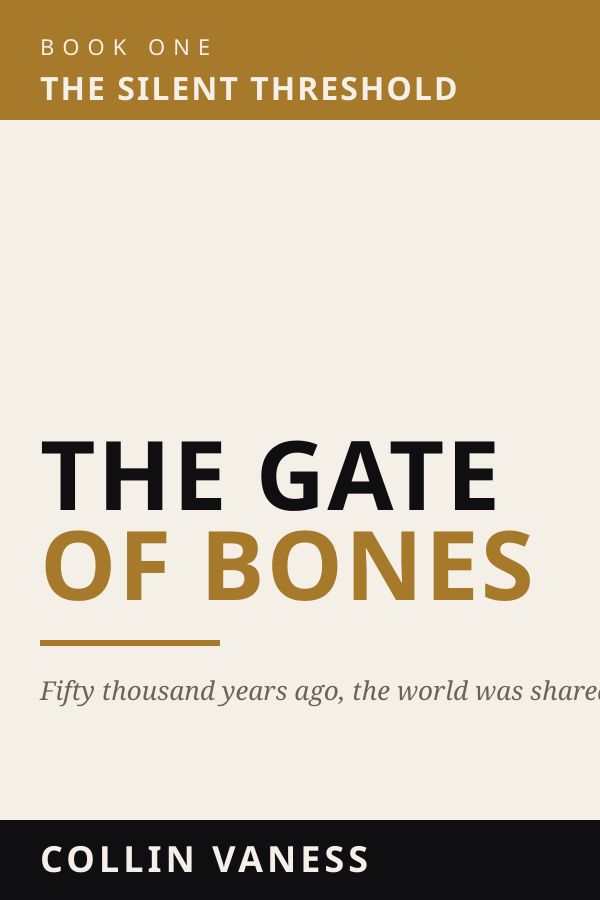

Prehistoric Epic · 4 Books
The Silent Threshold
A Prehistoric Epic in Four Books
Fifty thousand years ago, the world was shared. Sapiens, Neanderthals, Denisovans — three peoples on the same ground, and one of them about to be alone.
Get release news →
About the series
Fifty thousand years ago there were at least three human species sharing the same Pleistocene landscapes. By forty thousand years ago there was only one of us left. The Silent Threshold is a four-book epic about what happened in between — the encounters, the trades, the violences, the births that should not have been possible, and the long quiet absorption that ended with modern humans alone in our skulls.
Written from inside the cognitive worlds of three distinct peoples. No anthropological lecture; no romantic mysticism. The work in the prose is the species-voice work — each species thinking in its own grammar, dreaming in its own logic, frightened of different things.
“The future is a lie we tell ourselves to survive the present.”
— a saying of the Sapiens, Year One
The four books

The Gate of Bones
A young Sapiens hunter named Kael walks at the rear of a dying column. Three thousand souls. Two surviving oxen. A Bronze-clad king whose kingdom is years behind him. Ahead, a valley no one in living memory has crossed. In it, a people who are not Sapiens and not entirely strange — older, thicker-bodied, watching from the rock.
The opening volume of the saga. The point at which two worlds first see each other clearly.
The Long Hunger
The winter the Sapiens column did not plan for. The Neanderthal valley that was supposed to be passing-through. The first child that should not, by either people’s reckoning, exist.
The Gods of Dust
The Bronze fails. The Iron Crown rusts. What replaces them is not what anyone in the column wants to admit they are becoming.
The Bone Record
The closing volume. The cost of being the people who walked out alone.
For readers of
Jean M. Auel’s Earth’s Children, Kim Stanley Robinson’s Shaman, the historical prehistory of Mary Renault, and the species-mind ambition of Daniel Quinn’s Ishmael.